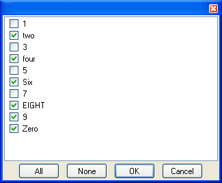

(list = #(), listField = false, listDesc = #(), listDescField = false,
saveAll = false, saveNone = false, mandatory = false, allowOther = false,
allowOtherField = false, width = 20, status = "", columnWidths = false,
text = '')
This is a single-line edit field with a list button on the right side. After items have been selected from the list (using the list button), the edit field will be filled in with a comma separated list of the values chosen from the list. Also the list can be typed directly into the field.
The list to be selected from can be specified using an Object for the list parameter, or with listField (see below).
For example:
ChooseManyControl(#(1,'two', 3, 'four', 5, 'Six', 7, 'EIGHT', 9, 'Zero'))
Would display:
And when you clicked on the button you'd get:
listField can be used to specify that the list should be taken from another field. Normally this will be a rule rather than an actual field. For example, to get the list from the "arcus_numlist" field you'd specify:
ChooseManyControl(listField: 'arcus_numlist')
and then specify a rule for this field like:
Rule_arcus_numlist
function ()
{
return "1, two, 3, four, 5, Six, 7, Eight, 9, Zero"
}
The list should be returned as a comma separated string.
If the saveAll parameter is specified as true, then the list will return the word '(All)' if all the items are selected. This can be useful when the application needs to save a value that always defaults to all the available options.
If the saveNone parameter is specified as true, then the list will return the word 'None' if no items were selected. This can be useful when the application needs to save a value for the field other than "".
If the mandatory parameter is true, the field can not be left empty by the user.
If the allowOther parameter is true, the user may type in a value that does not exist in the list; otherwise, values that do not exist in the list are considered invalid.
The allowOtherField is used to specify a Rule that gives a list of values that are valid, but do not show up in the list.
The width parameter is used to specify the width of the field.
The status parameter is used to specify a message to display on the status bar and in the tool tip.
The columnsWidth parameter is an object #('value': , 'desc': ) that is used to specify the width of the two columns displayed in the ChooseManyControl dialog.
The text parameter is a string that will be displayed between the list and the buttons.